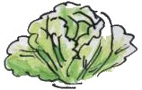

D'la Soupe dé Caboche
Èrchette

- eune caboche, mînchie
- trais ouognons (mouoyens), tranchis
- eune grôsse cârotte, cartellée ou râpée
- deux grôsses patates, cartellées ou râpées
- deux pouothieaux, copés m'nu
- du bouoillon d'viande, ou d'poule, ou du chaud d'lard
- eune bollée d'pais d'camp (en Êté)
- du pèrsi et du thymbe
- du sé - s'il en faut
Tchuithe l'ouognon, les cârottes, les patates preunmiéthement, ajouôter la caboche et l'pouothé à bein près eune démi'heuthe pus tard, et pis les pais acouo un quart d'heuthe pus tard, et garder pèrsi et thymbe jusqu'à deux'trais minnutes dévant qu' la soupe sait tchuite.
I' faut à bein près eune heuthe à tchuithe chutte bouonne soupe.
(D'la Soupe à la graisse est faite auve du gras d'viande fondu et des lédgeunmes, en ajouôtant dé l'ieau au lieu d'bouoillon ou d'chaud.)
Viyiz étout: